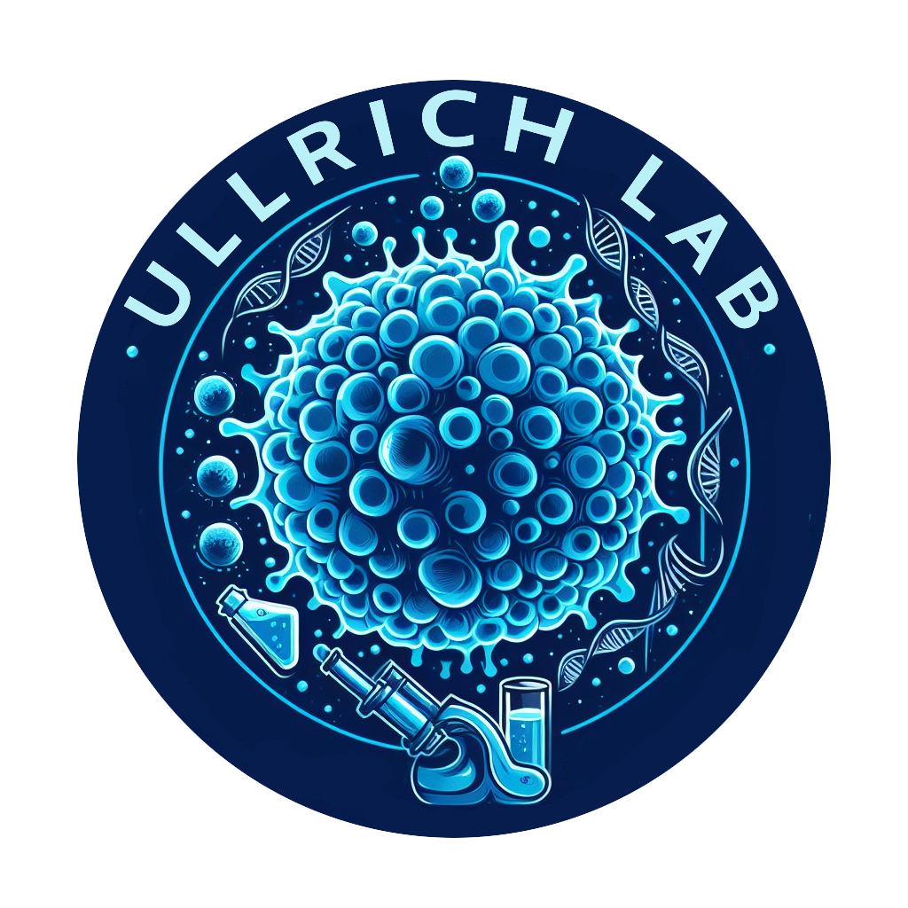

The Experimental Immunology and Cell Therapy Division is headed by Evelyn Ullrich, MD, Professor of Cellular Immunology, and includes preclinical and translational research projects as well as education and training in the field of immunology .
Preclinical research projects focus on the investigation of complex interactions in malignant diseases, immunodeficiencies as well as in stem cell transplantation and infectious complications. Our projects include molecular and functional characterization of cellular components of the immune system with emphasis on subsets of T cells, natural killer (NK) cells, cytokine-induced killer (CIK) cells and innate lymphoid cells (ILCs). Transcriptome and proteome analyses at single cell level combined with advanced model systems for live cell imaging provide in-depth understanding of molecular and Translational research aims to develop innovative cell-based immunotherapies. Viral and non-viral technologies for the generation of CAR engineered immune cell products are optimized in a broad range of in vitro/in vivo models. The foundations are laid for GMP-compliant manufacturing and clinical application of genetically modified cell therapies and combinatorial treatment concepts.
Artificial intelligence (AI) and machine learning (ML) technologies for data analysis, design and prediction will be applied to tailor immune cell therapies to specific needs and patients, thereby leading to the next level of development and translation of personalized medicine.
Contact
HEAD
Prof. Dr. med. Evelyn Ullrich
evelyn | ullrichlab.de
+49 69 6301 83000
SCIENTIFIC PROJECT COORDINATION
Dr.rer.nat. Thorsten Diegisser
diegisser | med.uni-frankfurt.de
+49 151 150 96319
LABORATORY
Franziska Ganß
franziska.ganss | med.uni-frankfurt.de
+49 69 6301 80651 (Office)
+49 69 6301 80648 (Laboratory)
+49 151 171 90472